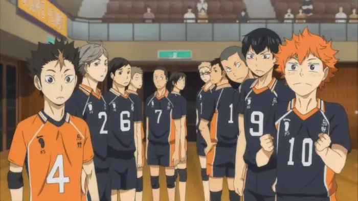

Nivel Inicial

El nivel inicial de voleibol se centra en enseñar a los jugadores las habilidades básicas y fundamentos del deporte. Esto incluye cosas como la posición correcta, el pase, la recepción, el saque y la técnica de bloqueo. También se enfoca en aspectos básicos del juego, como la comprensión de las reglas, la comunicación en la cancha y la coordinación en equipo. Los entrenadores suelen trabajar en mejorar la técnica individual de cada jugador, así como en fomentar la comprensión del juego en conjunto. Es importante desarrollar una base sólida en estas habilidades fundamentales antes de avanzar a niveles más competitivos.